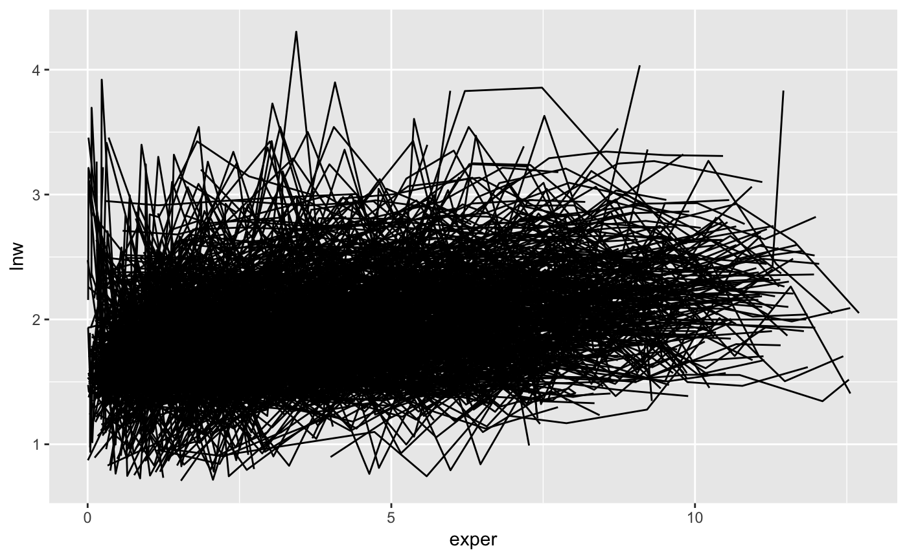

Note: This version of brolgar has been forked from tprvan/brolgar, and is undergoing breaking changes to the API. 

Exploring longitudinal data can be challenging. For example, when there are many individuals it is difficult to look at all of them, as you often get a “plate of spaghetti” plot, with many lines plotted on top of each other.

These are hard to interpret.
You might then want to explore those individuals with higher amounts of variation, or those with lower variation. But calculating this for individuals draws you away from your analysis, and instead you are now wrangling with a different problem: summarising key information about each individual and incorporating that back into the data.
This is annoying, and distracts from your analysis, inviting errors.
brolgar (BRowse over Longitudinal data Graphically and Analytically in R) (forked from https://github.com/tprvan/brolgar) provides tools for providing statistical summaries for each individual. These are referred to as a longnostics, a portmanteau of longitudinal and cognostic. These longnostics make it straightforward to extract subjects with certain properties to gain some insight into the data.
Installation
Install from GitHub with:
What is longitudinal data?
Longitudinal data has subjects who are measured on several characteristics repeatedly through time but not always at the same time points or the same number of times.
Example usage
Let’s extract informative individual patterns by concentrating on different statistics. A story can be woven that may be relevant rather than speaking in generalities.
The wages data set analysed in Singer & Willett (2003) will be used to demonstrate some of the capabilities of this package.
library(brolgar)
library(tibble)
data(wages)
wages
#> # A tibble: 6,402 x 9
#> id lnw exper ged postexp black hispanic hgc uerate
#> <int> <dbl> <dbl> <int> <dbl> <int> <int> <int> <dbl>
#> 1 31 1.49 0.015 1 0.015 0 1 8 3.21
#> 2 31 1.43 0.715 1 0.715 0 1 8 3.21
#> 3 31 1.47 1.73 1 1.73 0 1 8 3.21
#> 4 31 1.75 2.77 1 2.77 0 1 8 3.3
#> 5 31 1.93 3.93 1 3.93 0 1 8 2.89
#> 6 31 1.71 4.95 1 4.95 0 1 8 2.49
#> 7 31 2.09 5.96 1 5.96 0 1 8 2.6
#> 8 31 2.13 6.98 1 6.98 0 1 8 4.8
#> 9 36 1.98 0.315 1 0.315 0 0 9 4.89
#> 10 36 1.80 0.983 1 0.983 0 0 9 7.4
#> # … with 6,392 more rows
Available longnostics
The longnostics in brolgar all start with l_, and for all individuals in the data calculate a statistic for each individual (specified with an id), for some specified variable:
-
l_n_obs()Number of observations -
l_min()Minimum -
l_max()Maximum -
l_mean()Mean -
l_diff()Lagged difference (by default, the first order difference) -
l_q1()First quartile -
l_median()Median value -
l_q3()Third quartile -
l_sd()Standard deviation -
l_slope()Slope and intercept (given some linear model formula)
For example, we can calculate the number of observations with l_n_obs():
wages_nobs <- l_n_obs(data = wages, id = id)
wages_nobs
#> # A tibble: 888 x 2
#> id l_n_obs
#> <int> <int>
#> 1 31 8
#> 2 36 10
#> 3 53 8
#> 4 122 10
#> 5 134 12
#> 6 145 9
#> 7 155 11
#> 8 173 6
#> 9 206 3
#> 10 207 11
#> # … with 878 more rowsWhich could be further summarised to get a sense of the range of the data:
library(dplyr)
#>
#> Attaching package: 'dplyr'
#> The following objects are masked from 'package:stats':
#>
#> filter, lag
#> The following objects are masked from 'package:base':
#>
#> intersect, setdiff, setequal, union
library(ggplot2)
ggplot(wages_nobs,
aes(x = l_n_obs)) +
geom_bar()
Identifying an individual of interest
We might be interested in showing the experience and lnw (?), and so look at a plot like the following:

This is a plate of spaghetti! It is hard to understand!
We can use brolgar to get the number of observations and slope information for each individual to identify those that are decreasing over time.
sl <- l_slope(wages, id, lnw~exper)
ns <- l_n_obs(wages, id)
sl
#> # A tibble: 888 x 3
#> id l_intercept l_slope_exper
#> <int> <dbl> <dbl>
#> 1 31 1.41 0.101
#> 2 36 2.04 0.0588
#> 3 53 2.29 -0.358
#> 4 122 1.93 0.0374
#> 5 134 2.03 0.0831
#> 6 145 1.59 0.0469
#> 7 155 1.66 0.0867
#> 8 173 1.61 0.100
#> 9 206 1.73 0.180
#> 10 207 1.62 0.0884
#> # … with 878 more rows
ns
#> # A tibble: 888 x 2
#> id l_n_obs
#> <int> <int>
#> 1 31 8
#> 2 36 10
#> 3 53 8
#> 4 122 10
#> 5 134 12
#> 6 145 9
#> 7 155 11
#> 8 173 6
#> 9 206 3
#> 10 207 11
#> # … with 878 more rowsWe can then join these summaries back to the data:
wages_lg <- wages %>%
left_join(sl, by = "id") %>%
left_join(ns, by = "id")
wages_lg
#> # A tibble: 6,402 x 12
#> id lnw exper ged postexp black hispanic hgc uerate l_intercept
#> <int> <dbl> <dbl> <int> <dbl> <int> <int> <int> <dbl> <dbl>
#> 1 31 1.49 0.015 1 0.015 0 1 8 3.21 1.41
#> 2 31 1.43 0.715 1 0.715 0 1 8 3.21 1.41
#> 3 31 1.47 1.73 1 1.73 0 1 8 3.21 1.41
#> 4 31 1.75 2.77 1 2.77 0 1 8 3.3 1.41
#> 5 31 1.93 3.93 1 3.93 0 1 8 2.89 1.41
#> 6 31 1.71 4.95 1 4.95 0 1 8 2.49 1.41
#> 7 31 2.09 5.96 1 5.96 0 1 8 2.6 1.41
#> 8 31 2.13 6.98 1 6.98 0 1 8 4.8 1.41
#> 9 36 1.98 0.315 1 0.315 0 0 9 4.89 2.04
#> 10 36 1.80 0.983 1 0.983 0 0 9 7.4 2.04
#> # … with 6,392 more rows, and 2 more variables: l_slope_exper <dbl>,
#> # l_n_obs <int>We can then highlight those individuals with more than 5 observations, and highlight those with a negative slope using gghighlight:
library(gghighlight)
wages_lg %>%
filter(l_n_obs > 5) %>%
ggplot(aes(x = exper,
y = lnw,
group = id)) +
geom_line() +
gghighlight(l_slope_exper < (-0.5),
use_direct_label = FALSE)
Filtering by the number of observations
You can filter by the number of observations using filter_n_obs()
wages %>%
filter_n_obs(id = id,
l_n_obs > 3)
#> # A tibble: 6,145 x 10
#> id l_n_obs lnw exper ged postexp black hispanic hgc uerate
#> <int> <int> <dbl> <dbl> <int> <dbl> <int> <int> <int> <dbl>
#> 1 31 8 1.49 0.015 1 0.015 0 1 8 3.21
#> 2 31 8 1.43 0.715 1 0.715 0 1 8 3.21
#> 3 31 8 1.47 1.73 1 1.73 0 1 8 3.21
#> 4 31 8 1.75 2.77 1 2.77 0 1 8 3.3
#> 5 31 8 1.93 3.93 1 3.93 0 1 8 2.89
#> 6 31 8 1.71 4.95 1 4.95 0 1 8 2.49
#> 7 31 8 2.09 5.96 1 5.96 0 1 8 2.6
#> 8 31 8 2.13 6.98 1 6.98 0 1 8 4.8
#> 9 36 10 1.98 0.315 1 0.315 0 0 9 4.89
#> 10 36 10 1.80 0.983 1 0.983 0 0 9 7.4
#> # … with 6,135 more rows
wages %>%
filter_n_obs(id = id,
l_n_obs == 1)
#> # A tibble: 38 x 10
#> id l_n_obs lnw exper ged postexp black hispanic hgc uerate
#> <int> <int> <dbl> <dbl> <int> <dbl> <int> <int> <int> <dbl>
#> 1 266 1 1.81 0.322 1 0.182 0 0 9 8.8
#> 2 304 1 1.84 0.580 0 0 0 1 8 3.39
#> 3 911 1 2.51 1.67 1 1.67 1 0 11 9.9
#> 4 1032 1 1.65 0.808 0 0 1 0 8 9.3
#> 5 1219 1 1.57 1.5 0 0 1 0 9 8.4
#> 6 1282 1 2.22 0.292 1 0.292 0 0 11 5.89
#> 7 1542 1 1.81 0.173 0 0 0 0 10 4.39
#> 8 1679 1 1.94 0.365 1 0 0 0 10 5.7
#> 9 2065 1 2.60 1.5 0 0 0 0 11 9.7
#> 10 2261 1 2.25 0.005 0 0 0 0 6 6.9
#> # … with 28 more rows
wages %>%
filter_n_obs(id = id,
l_n_obs >= 13)
#> # A tibble: 78 x 10
#> id l_n_obs lnw exper ged postexp black hispanic hgc uerate
#> <int> <int> <dbl> <dbl> <int> <dbl> <int> <int> <int> <dbl>
#> 1 1204 13 1.81 0.455 0 0 0 0 8 3.69
#> 2 1204 13 1.99 1.28 0 0 0 0 8 3.99
#> 3 1204 13 2.08 2.24 0 0 0 0 8 5.7
#> 4 1204 13 2.30 3.22 0 0 0 0 8 6.59
#> 5 1204 13 2.20 4.20 0 0 0 0 8 7.8
#> 6 1204 13 2.33 5.18 0 0 0 0 8 4.8
#> 7 1204 13 2.44 6.20 0 0 0 0 8 3.8
#> 8 1204 13 2.58 7.28 0 0 0 0 8 3.8
#> 9 1204 13 2.22 8.43 0 0 0 0 8 3.8
#> 10 1204 13 2.80 9.64 0 0 0 0 8 3.19
#> # … with 68 more rowsCalculating all longnostics
You can calculate all longnostics using longnostic_all():
longnostic_all(data = wages,
id = id,
var = lnw,
formula = lnw~exper)
#> # A tibble: 888 x 12
#> id l_diff_1 l_max l_mean l_median l_min l_n_obs l_q1 l_q3 l_sd
#> <int> <dbl> <dbl> <dbl> <dbl> <dbl> <int> <dbl> <dbl> <dbl>
#> 1 31 0.377 2.13 1.75 1.73 1.43 8 1.49 1.97 0.277
#> 2 36 1.11 2.93 2.33 2.32 1.80 10 2.05 2.54 0.387
#> 3 53 1.70 3.24 1.89 1.71 1.54 8 1.59 1.88 0.562
#> 4 122 1.68 2.92 2.17 2.19 0.763 10 2.12 2.42 0.574
#> 5 134 0.368 2.93 2.48 2.36 2.00 12 2.29 2.77 0.321
#> 6 145 0.289 2.04 1.76 1.77 1.48 9 1.60 1.88 0.185
#> 7 155 0.627 2.64 2.17 2.22 1.54 11 1.93 2.40 0.362
#> 8 173 0.319 2.34 1.93 2.00 1.56 6 1.76 2.02 0.274
#> 9 206 0.269 2.48 2.27 2.30 2.03 3 2.16 2.39 0.228
#> 10 207 0.399 2.66 2.11 2.15 1.58 11 1.90 2.24 0.327
#> # … with 878 more rows, and 2 more variables: l_intercept <dbl>,
#> # l_slope_exper <dbl>A Note on the API
This version of brolgar has been forked from tprvan/brolgar, and is undergoing breaking changes to the API.